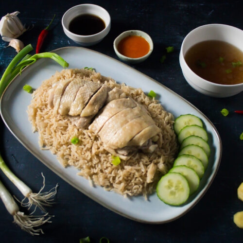

Hainanese Chicken Rice
Hainanese chicken rice is a dish of poached chicken and seasoned rice, served with chilli sauce and usually with cucumber garnishes.
$6.70
Mushroom Rice
This easy rice dish is one of my favorite mushroom recipes! Garlicky, buttery rice combined with tender caramelized cremini mushrooms.
$14.20
Fried Rice
Fried Rice is a combination of long grained rice, mixture of warm peas, carrots and onions with scrambled eggs mixed all together!
$6.20
Mee Rebus
Mee Rebus is a Malay noodle dish in a sweet potato-based gravy. The combination of sweetness and savoury flavours are deliciously enhanced
$12.20
Lontong
Lontong is an Indonesian dish made of compressed rice cake in the form of a cylinder wrapped inside a banana leaf, commonly found in Indonesia, Malaysia
$7.10